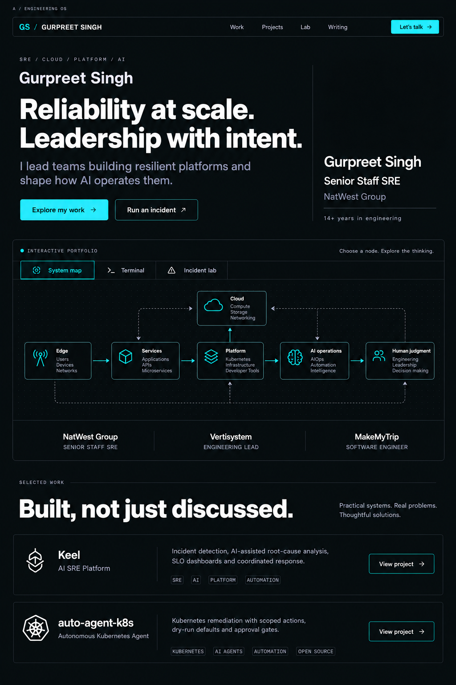
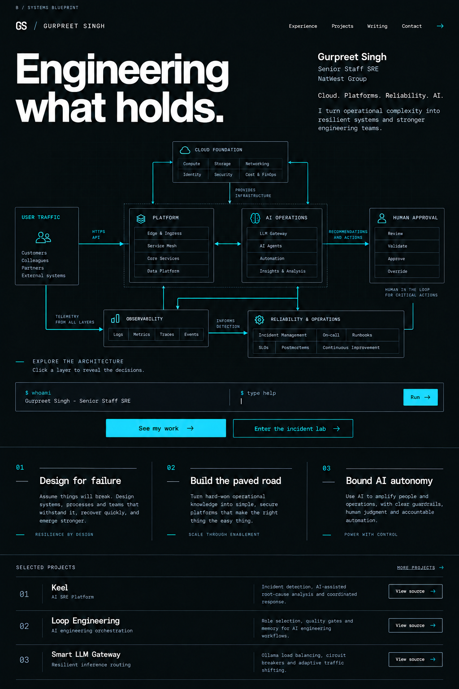
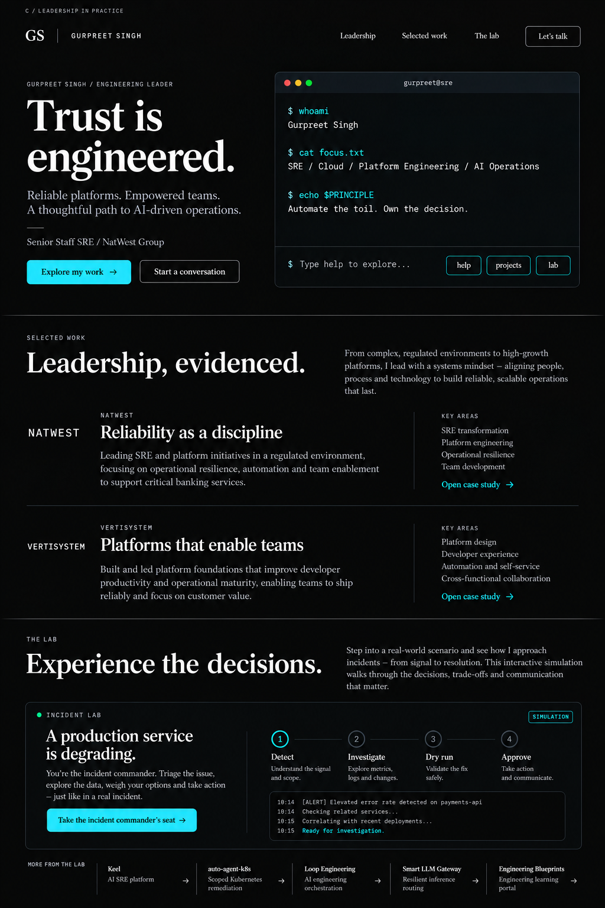

Engineering OS - recommended
Strong leadership positioning above one interactive workspace. System map, terminal and incident lab become views of one experience.

Systems Blueprint
An architectural centerpiece, a precise grid and an engineering project index. The most technical and diagram-led direction.

Leadership in Practice
A confident serif headline, terminal-led hero and evidence-led company case studies. Closest to the current portfolio's identity.
